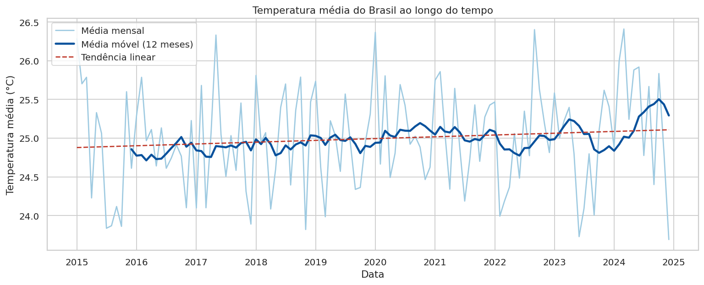
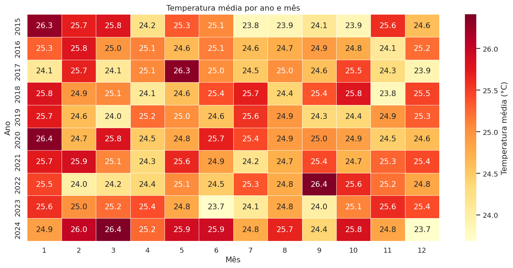
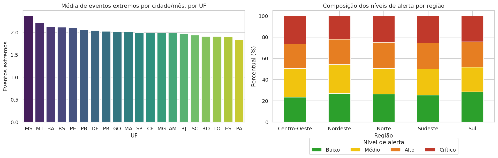
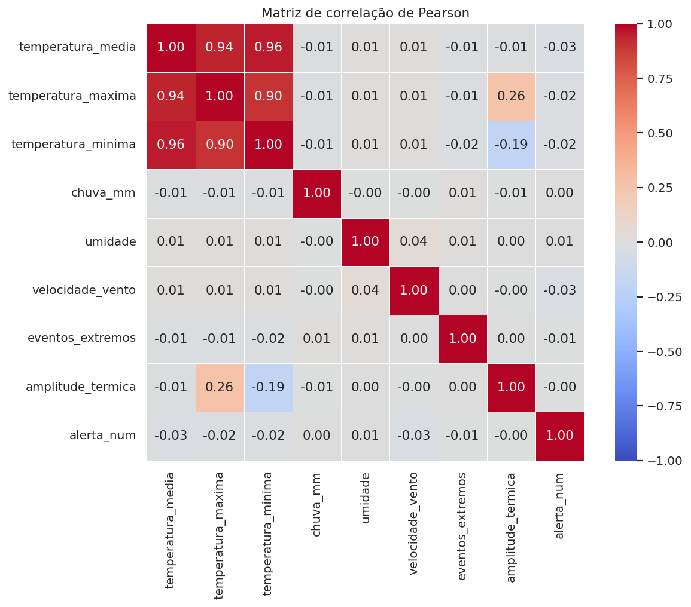
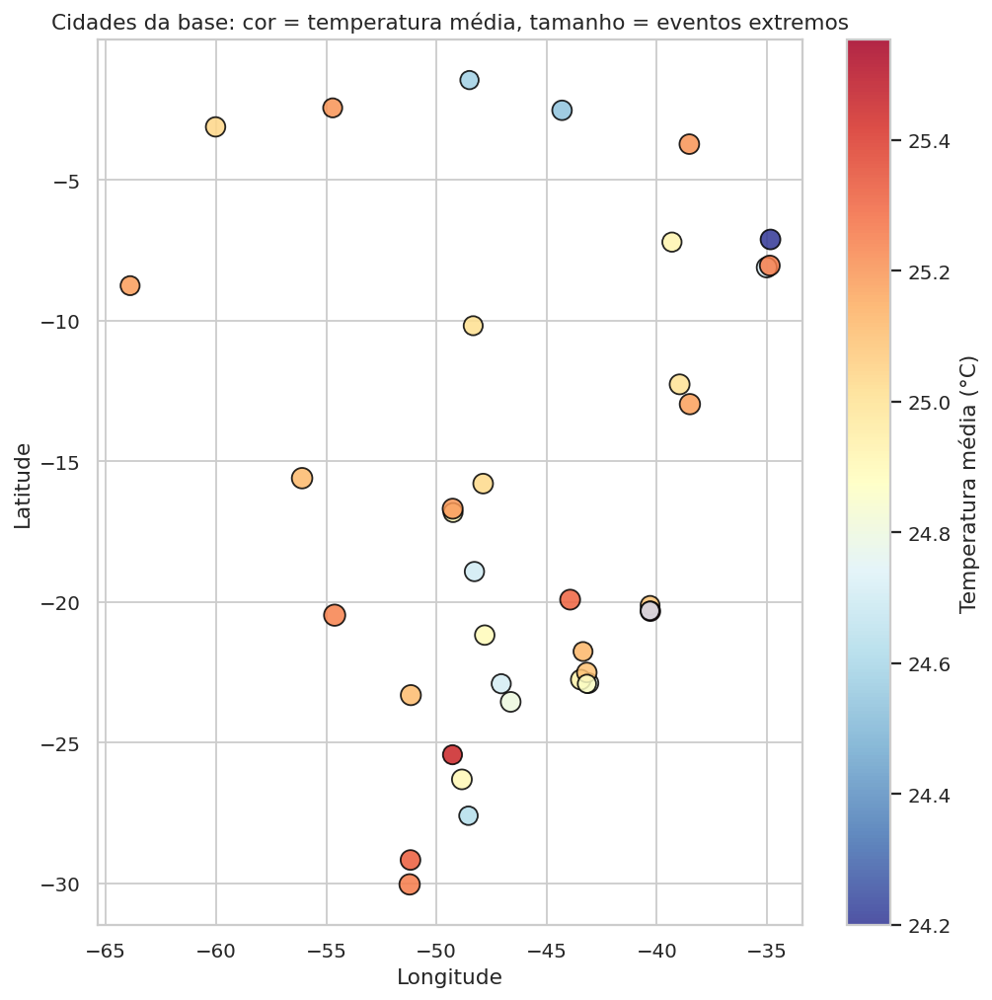

Sobre o projeto
Este projeto analisa uma base simulada de registros climáticos mensais de 37 cidades brasileiras, distribuídas por 20 unidades federativas, entre janeiro de 2015 e dezembro de 2024. A análise considera temperatura, chuva, umidade, velocidade do vento, eventos extremos e nível de alerta.
A proposta é demonstrar um fluxo completo de projeto analítico: tratamento dos dados, análise exploratória, criação de indicadores, visualizações, dashboard interativo e publicação em ambiente web.
Atenção: a base de dados é simulada. Os resultados demonstram o método de análise e não representam o clima real do Brasil.
Perguntas de análise
- Como estão distribuídas as variáveis climáticas e os níveis de alerta?
- Existe tendência ou sazonalidade ao longo dos anos e dos meses?
- Quais regiões, estados e cidades se destacam em temperatura, chuva e eventos extremos?
- Onde estão localizadas as cidades com maiores valores de cada indicador?
- Quais variáveis se relacionam entre si?
- O nível de alerta pode ser explicado pelas variáveis climáticas?
Indicadores analisados
Principais visualizações





Conclusão
A base apresenta temperatura média de 24,99 °C, chuva média mensal de 105,9 mm e 48,7 % dos registros em alerta Alto ou Crítico. As diferenças entre regiões, anos e meses são pequenas, e o nível de alerta não é explicado pelas variáveis climáticas, comportamento típico de dados simulados.
Para uma análise aplicada, o ideal é substituir a base por dados observados e definir um critério explícito para o nível de alerta.
Tecnologias utilizadas
Estrutura do projeto
projeto-clima-brasil/ ├── app.py ├── requirements.txt ├── README.md ├── index.html ├── dados/ ├── database/ ├── notebooks/ └── imagens/
Arquivos do projeto
Dashboard interativo
O dashboard foi desenvolvido com Streamlit e permite explorar os dados por meio de filtros múltiplos, KPIs dinâmicos, gráficos interativos, análise temporal, mapa interativo e correlações.